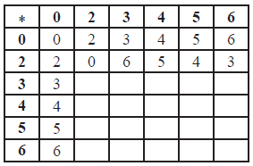

SL Paper 2
The set of all integer s from 0 to 99 inclusive is denoted by S. The binary operations \( * \) and \( \circ \) are defined on S by
\(a * b = \left[ {a + b + 20} \right]\)(mod 100)
\(a \circ b = \left[ {a + b - 20} \right]\)(mod 100).
The equivalence relation R is defined by \(aRb \Leftrightarrow \left( {{\text{sin}}\frac{{\pi a}}{5} = {\text{sin}}\frac{{\pi b}}{5}} \right)\).
Find the identity element of S with respect to \( * \).
Show that every element of S has an inverse with respect to \( * \).
State which elements of S are self-inverse with respect to \( * \).
Prove that the operation \( \circ \) is not distributive over \( * \).
Determine the equivalence classes into which R partitions S, giving the first four elements of each class.
Find two elements in the same equivalence class which are inverses of each other with respect to \( * \).
Markscheme
\(a + e + 20 = a\)(mod 100) (M1)
\(e = - 20\)(mod 100) (A1)
\(e = 80\) A1
[3 marks]
\(a + {a^{ - 1}} + 20 = 80\)(mod 100) (M1)
inverse of \(a\) is \(60 - a\) (mod 100) A1
[2 marks]
30 and 80 A1A1
[2 marks]
\(a \circ \left( {b * c} \right) = a \circ \left( {b + c + 20} \right)\)(mod 100)
\( = a + \left( {b + c + 20} \right) - 20\)(mod 100) (M1)
\( = a + b + c\)(mod 100) A1
\(\left( {a \circ b} \right) * \left( {a \circ c} \right) = \left( {a + b - 20} \right) * \left( {a + c - 20} \right)\)(mod 100) M1
\( = a + b - 20 + a + c - 20 + 20\)(mod 100)
\( = 2a + b + c - 20\)(mod 100) A1
hence we have shown that \(a \circ \left( {b * c} \right) \ne \left( {a \circ b} \right) * \left( {a \circ c} \right)\) R1
hence the operation \( \circ \) is not distributive over \( * \) AG
Note: Accept a counterexample.
[5 marks]
{0,5,10,15...} A1
{1,4,11,14...} A1
{2,3,12,13...} A1
{6,9,16,19...} A1
{7,8,17,18...} A1
[5 marks]
for example 10 and 50, 20 and 40, 0 and 60… A2
[2 marks]
Examiners report
Consider the set \(J = \left\{ {a + b\sqrt 2 :a,{\text{ }}b \in \mathbb{Z}} \right\}\) under the binary operation multiplication.
Consider \(a + b\sqrt 2 \in G\), where \(\gcd (a,{\text{ }}b) = 1\),
Show that \(J\) is closed.
State the identity in \(J\).
Show that
(i) \(1 - \sqrt 2 \) has an inverse in \(J\);
(ii) \(2 + 4\sqrt 2 \) has no inverse in \(J\).
Show that the subset, \(G\), of elements of \(J\) which have inverses, forms a group of infinite order.
(i) Find the inverse of \(a + b\sqrt 2 \).
(ii) Hence show that \({a^2} - 2{b^2}\) divides exactly into \(a\) and \(b\).
(iii) Deduce that \({a^2} - 2{b^2} = \pm 1\).
Markscheme
\(\left( {a + b\sqrt 2 } \right) \times \left( {c + d\sqrt 2 } \right) = ac + bc\sqrt 2 + ad\sqrt 2 + 2bd\) M1
\( = ac + 2bd + (bc + ad)\sqrt 2 \in J\) A1
hence \(J\) is closed AG
Note: Award M0A0 if the general element is squared.
[2 marks]
the identity is \(1(a = 1,{\text{ }}b = 0)\) A1
[1 mark]
(i) \(\left( {1 - \sqrt 2 } \right) \times a = 1\)
\(a = \frac{1}{{1 - \sqrt 2 }}\) M1
\( = \frac{{1 + \sqrt 2 }}{{\left( {1 - \sqrt 2 } \right)\left( {1 + \sqrt 2 } \right)}} = \frac{{1 + \sqrt 2 }}{{ - 1}} = - 1 - \sqrt 2 \) A1
hence \(1 - \sqrt 2 \) has an inverse in \(J\) AG
(ii) \(\left( {2 + 4\sqrt 2 } \right) \times a = 1\)
\(a = \frac{1}{{2 + 4\sqrt 2 }}\) M1
\( = \frac{{2 - 4\sqrt 2 }}{{\left( {2 - 4\sqrt 2 } \right)\left( {2 + 4\sqrt 2 } \right)}} = \frac{{2 - 4\sqrt 2 }}{{ - 28}}\) A1
which does not belong to \(J\) R1
hence \(2 + 4\sqrt 2 \) has no inverse in \(J\) AG
[5 marks]
multiplication is associative A1
let \({g_1}\) and \({g_2}\) belong to \(G\), then \(g_1^{ - 1},{\text{ }}g_2^{ - 1}\) and \(g_2^{ - 1}g_1^{ - 1}\) belong to \(J\) M1
then \(({g_1}{g_2}) \times (g_2^{ - 1}g_1^{ - 1}) = 1 \times 1 = 1\) A1
so \({g_1}{g_2}\) has inverse \(g_2^{ - 1}g_1^{ - 1}\) in \(J \Rightarrow G\) is closed A1
\(G\) contains the identity A1
\(G\) possesses inverses A1
\(G\) contains all integral powers of \(1 - \sqrt 2 \) A1
hence \(G\) is an infinite group AG
[7 marks]
(i) \({\left( {a + b\sqrt 2 } \right)^{ - 1}} = \frac{1}{{a + b\sqrt 2 }} = \frac{1}{{a + b\sqrt 2 }} \times \frac{{a - b\sqrt 2 }}{{a - b\sqrt 2 }}\) M1
\( = \frac{a}{{{a^2} - 2{b^2}}} - \frac{b}{{{a^2} - 2{b^2}}}\sqrt 2 \) A1
(ii) above number belongs to \(J\) and \({a^2} - 2{b^2} \in \mathbb{Z}\) R1
implies \({a^2} - 2{b^2}\) divides exactly into \(a\) and \(b\) AG
(iii) since \(\gcd (a,{\text{ }}b) = 1\) R1
\({a^2} - 2{b^2} = \pm 1\) AG
[4 marks]
Examiners report
Parts (a), (b) and (c) were generally well done. In a few cases, squaring a general element was thought, erroneously, to be sufficient to prove closure in part (a).
Parts (a), (b) and (c) were generally well done. In a few cases, squaring a general element was thought, erroneously, to be sufficient to prove closure in part (a).
Parts (a), (b) and (c) were generally well done. In a few cases, squaring a general element was thought, erroneously, to be sufficient to prove closure in part (a).
In part (d) closure was rarely established satisfactorily.
Part (e) was often tackled well.
(i) Draw the Cayley table for the set \(S = \left\{ {0,1,2,3,4,\left. 5 \right\}} \right.\) under addition modulo six \(({ + _6})\) and hence show that \(\left\{ {S, + \left. {_6} \right\}} \right.\) is a group.
(ii) Show that the group is cyclic and write down its generators.
(iii) Find the subgroup of \(\left\{ {S, + \left. {_6} \right\}} \right.\) that contains exactly three elements.
Prove that a cyclic group with exactly one generator cannot have more than two elements.
\(H\) is a group and the function \(\Phi :H \to H\) is defined by \(\Phi (a) = {a^{ - 1}}\) , where \({a^{ - 1}}\) is the inverse of a under the group operation. Show that \(\Phi \) is an isomorphism if and only if H is Abelian.
Markscheme
(i)
the table is closed A1
the identity is \(0\) A1
\(0\) is in every row and column once so each element has a unique inverse A1
addition is associative A1
therefore \(\left\{ {S, + \left. {_6} \right\}} \right.\) is a group R1
(ii) \(1 + 1 + 1 + 1 + 1 + 1 = 0\) M1
\(1 + 1 + 1 + 1 + 1 = 5\)
\(1 + 1 + 1 + 1 = 4\)
\(1 + 1 + 1 = 3\)
\(1 + 1 = 2\)
so \(1\) is a generator of \(\left\{ {S, + \left. {_6} \right\}} \right.\) and the group is cyclic A1
(since \(5\) is the additive inverse of \(1\)) \(5\) is also a generator A1
(iii) \(\left\{ {0,2,\left. 4 \right\}} \right.\) A1
[11 marks]
if \(a\) is a generator of group \((G, * )\) then so is \({a^{ - 1}}\) A1
if \((G, * )\) has exactly one generator \(a\) then \(a = {a^{ - 1}}\) A1
so \({a^2} = e\) and \(G = \left\{ {e,\left. a \right\}} \right.\) \(\left\{ {\left. e \right\}} \right.\) A1R1
so cyclic group with exactly one generator cannot have more than two elements AG
[4 marks]
every element of a group has a unique inverse so \(\Phi \) is a bijection A1
\(\Phi (ab) = {(ab)^{ - 1}} = {b^{ - 1}}{a^{ - 1}}\) M1A1
if \(H\) is Abelian then it follows that
\({b^{ - 1}}{a^{ - 1}} = {a^{ - 1}}{b^{ - 1}} = \Phi (a)\Phi (b)\) A1
so \(\Phi \) is an isomorphism R1
if \(\Phi \) is an isomorphism, then M1
for all \(a,b \in H\) , \(\Phi (ab) = \Phi (a)\Phi (b)\) M1
\({(ab)^{ - 1}} = {a^{ - 1}}{b^{ - 1}}\)
\( \Rightarrow {b^{ - 1}}{a^{ - 1}} = {a^{ - 1}}{b^{ - 1}}\) A1
so \(H\) is Abelian R1
[9 marks]
Examiners report
(a)(i) This was routine start to the question, but some candidates thought that commutativity was necessary as a group property.
(ii) Showing why 1 and 5 were generators would have been appropriate since this is needed for the cyclic property of the group.
(ii) This did not prove difficult for most candidates.
There were some long, confused arguments that did not lead anywhere. Candidates often do not appreciate the significance of "if" and "only".
There were some long, confused arguments that did not lead anywhere. Candidates often do not appreciate the significance of "if" and "only".
The function \(f:\mathbb{R} \times \mathbb{R} \to \mathbb{R} \times \mathbb{R}\) is defined by \(\boldsymbol{X} \mapsto \boldsymbol{AX}\) , where \(\boldsymbol{X} = \left[ \begin{array}{l}
x\\
y
\end{array} \right]\) and \(\boldsymbol{A} = \left[ \begin{array}{l}
a\\
c
\end{array} \right.\left. \begin{array}{l}
b\\
d
\end{array} \right]\) where \(a\) , \(b\) , \(c\) , \(d\) are all non-zero.
Consider the group \(\left\{ {S,{ + _m}} \right\}\) where \(S = \left\{ {0,1,2 \ldots m - 1} \right\}\) , \(m \in \mathbb{N}\) , \(m \ge 3\) and \({ + _m}\) denotes addition modulo \(m\) .
Show that \(f\) is a bijection if \(\boldsymbol{A}\) is non-singular.
Suppose now that \(\boldsymbol{A}\) is singular.
(i) Write down the relationship between \(a\) , \(b\) , \(c\) , \(d\) .
(ii) Deduce that the second row of \(\boldsymbol{A}\) is a multiple of the first row of \(\boldsymbol{A}\) .
(iii) Hence show that \(f\) is not a bijection.
Show that \(\left\{ {S,{ + _m}} \right\}\) is cyclic for all m .
Given that \(m\) is prime,
(i) explain why all elements except the identity are generators of \(\left\{ {S,{ + _m}} \right\}\) ;
(ii) find the inverse of \(x\) , where x is any element of \(\left\{ {S,{ + _m}} \right\}\) apart from the identity;
(iii) determine the number of sets of two distinct elements where each element is the inverse of the other.
Suppose now that \(m = ab\) where \(a\) , \(b\) are unequal prime numbers. Show that \(\left\{ {S,{ + _m}} \right\}\) has two proper subgroups and identify them.
Markscheme
recognizing that the function needs to be injective and surjective R1
Note: Award R1 if this is seen anywhere in the solution.
injective:
let \(\boldsymbol{U}, \boldsymbol{V} \in ^\circ \times ^\circ \) be 2-D column vectors such that \(\boldsymbol{AU} = \boldsymbol{AV}\) M1
\({\boldsymbol{A}^{ - 1}}\boldsymbol{AU} = {\boldsymbol{A}^{ - 1}}\boldsymbol{AV}\) M1
\(\boldsymbol{U} = \boldsymbol{V}\) A1
this shows that \(f\) is injective
surjective:
let \(W \in ^\circ \times ^\circ \) M1
then there exists \(\boldsymbol{Z} = {\boldsymbol{A}^{ - 1}}\boldsymbol{W} \in ^\circ \times ^\circ \) such that \(\boldsymbol{AZ} = \boldsymbol{W}\) M1A1
this shows that \(f\) is surjective
therefore \(f\) is a bijection AG
[7 marks]
(i) the relationship is \(ad = bc\) A1
(ii) it follows that \(\frac{c}{a} = \frac{d}{b} = \lambda \) so that \((c,d) = \lambda (a,b)\) A1
(iii) EITHER
let \(\boldsymbol{W} = \left[ \begin{array}{l}
p\\
q
\end{array} \right]\) be a 2-D vector
then \(\boldsymbol{AW} = \left[ \begin{array}{l}
a\\
\lambda a
\end{array} \right.\left. \begin{array}{l}
b\\
\lambda b
\end{array} \right]\left[ \begin{array}{l}
p\\
q
\end{array} \right]\) M1
\( = \left[ \begin{array}{l}
ap + bq\\
\lambda (ap + bq)
\end{array} \right]\) A1
the image always satisfies \(y = \lambda x\) so \(f\) is not surjective and therefore not a bijection R1
OR
consider
\(\left[ {\begin{array}{*{20}{c}}
a&b \\
{\lambda a}&{\lambda b}
\end{array}} \right]\left[ {\begin{array}{*{20}{c}}
b \\
0
\end{array}} \right] = \left[ {\begin{array}{*{20}{c}}
{ab} \\
{\lambda ab}
\end{array}} \right]\)
\(\left[ {\begin{array}{*{20}{c}}
a&b \\
{\lambda a}&{\lambda b}
\end{array}} \right]\left[ {\begin{array}{*{20}{c}}
0 \\
a
\end{array}} \right] = \left[ {\begin{array}{*{20}{c}}
{ab} \\
{\lambda ab}
\end{array}} \right]\)
this shows that \(f\) is not injective and therefore not a bijection R1
[5 marks]
the identity element is \(0\) R1
consider, for \(1 \le r \le m\) ,
using \(1\) as a generator M1
\(1\) combined with itself \(r\) times gives \(r\) and as \(r\) increases from \(1\) to m, the group is generated ending with \(0\) when \(r = m\) A1
it is therefore cyclic AG
[3 marks]
(i) by Lagrange the order of each element must be a factor of \(m\) and if \(m\) is prime, its only factors are \(1\) and \(m\) R1
since 0 is the only element of order \(1\), all other elements are of order \(m\) and are therefore generators R1
(ii) since \(x{ + _m}(m - x) = 0\) (M1)
the inverse of x is \((m - x)\) A1
(iii) consider
 M1A1
M1A1
there are \(\frac{1}{2}(m - 1)\) inverse pairs A1 N1
Note: Award M1 for an attempt to list the inverse pairs, A1 for completing it correctly and A1 for the final answer.
[7 marks]
since \(a\), \(b\) are unequal primes the only factors of \(m\) are \(a\) and \(b\)
there are therefore only subgroups of order \(a\) and \(b\) R1
they are
\(\left\{ {0,a,2a, \ldots ,(b - 1)a} \right\}\) A1
\(\left\{ {0,b,2b, \ldots ,(a - 1)b} \right\}\) A1
[3 marks]
Examiners report
This proved to be a difficult question for some candidates. Most candidates realised that they had to show that the function was both injective and surjective but many failed to give convincing proofs. Some candidates stated, incorrectly, that f was injective because \(\boldsymbol{AX}\) is uniquely defined, not realising that they had to show that \(\boldsymbol{AX} = \boldsymbol{AY} \Rightarrow \boldsymbol{X} = \boldsymbol{Y}\) .
Solutions to (b) were disappointing with many candidates failing to realise that they had either to show that \(\boldsymbol{AX}\) was confined to a subset of \(\mathbb{R} \times \mathbb{R}\) or that two distinct vectors had the same image under \(f\).
This question was well answered in general with solutions to (c) being the least successful.
This question was well answered in general with solutions to (c) being the least successful.
This question was well answered in general with solutions to (c) being the least successful.
The binary operator \( * \) is defined for a , \(b \in \mathbb{R}\) by \(a * b = a + b - ab\) .
(i) Show that \( * \) is associative.
(ii) Find the identity element.
(iii) Find the inverse of \(a \in \mathbb{R}\) , showing that the inverse exists for all values of \(a\) except one value which should be identified.
(iv) Solve the equation \(x * x = 1\) .
The domain of \( * \) is now reduced to \(S = \left\{ {0,2,3,4,5,\left. 6 \right\}} \right.\) and the arithmetic is carried out modulo \(7\).
(i) Copy and complete the following Cayley table for \(\left\{ {S,\left. * \right\}} \right.\) .

(ii) Show that \(\left\{ {S,\left. * \right\}} \right.\) is a group.
(iii) Determine the order of each element in S and state, with a reason, whether or not \(\left\{ {S,\left. * \right\}} \right.\) is cyclic.
(iv) Determine all the proper subgroups of \(\left\{ {S,\left. * \right\}} \right.\) and explain how your results illustrate Lagrange’s theorem.
(v) Solve the equation \(2 * x * x = 5\) .
Markscheme
(i) \(a * (b * c) = a * (b + c - bc)\) M1
\( = a + b + c - bc - a(b + c - bc)\) A1
\( = a + b + c - bc - ca - ab + abc\) A1
\((a * b) * c = (a + b - ab) * c\) M1
\( = a + b - ab + c - (a + b - ab)c\) A1
\( = a + b + c - bc - ca - ab + abc\) , hence associative AG
(ii) let \(e\) be the identity element, so that \(a * e = a\) (M1)
then,
\(a + e - ae = a\) A1
\(e(1 - a) = 0\)
\(e = 0\) A1
(iii) let \({a^{ - 1}}\) be the inverse of \(a\), so that \(a * {a^{ - 1}} = 0\) (M1)
then,
\(a + {a^{ - 1}} - a{a^{ - 1}} = 0\) A1
\({a^{ - 1}} = \frac{a}{{a - 1}}\) A1
this gives an inverse for all elements except 1 which has no inverse R1
(iv) \(2x - {x^2} = 1\) M1
\({(x - 1)^2} = 0\) (A1)
\(x = 1\) A1
[15 marks]
(i)
 A3
A3
Note: Award A3 for correct table, A2 for one error, A1 for two errors and A0 for more than two errors.
(ii) there are no new elements in the table so it is closed A1
there is an identity element, \(0\) A1
every row (column) has a \(0\) so every element has an inverse A1
associativity has been proved earlier A1
therefore \(\left\{ {S,\left. * \right\}} \right.\) is a group AG
(iii)
 A3
A3
Note: Award A3 for correct table, A2 for one error, A1 for two errors and A0 for more than two errors.
it is cyclic because there are elements of order \(6\) R1
(iv) the proper subgroups are \(\left\{ {0,\left. 2 \right\}} \right.\) , \(\left\{ {0,\left. {4,6} \right\}} \right.\) A1A1
the orders of the subgroups (\(2\), \(3\)) are factors of the order of the group (6) A1
(v) recognizing \(x * x = 4\) (M1)
\(x = 3\) , \(6\) A1A1
[17 marks]
Examiners report
This question was well answered by many candidates. The most common error in (a) was confusing associativity with commutativity.
Many wholly correct or almost wholly correct answers to part (b) were seen. Those who did make errors in part (b) were usually unable to fully justify the properties of a group, could not explain why the group was cyclic or could not relate subgroups to Lagrange’s theorem. Some candidates made errors in calculating the orders of the elements.
The set \(S\) consists of real numbers r of the form \(r = a + b\sqrt 2 \) , where \(a,b \in \mathbb{Z}\) .
The relation \(R\) is defined on \(S\) by \({r_1}R{r_2}\) if and only if \({a_1} \equiv {a_2}\) (mod2) and \({b_1} \equiv {b_2}\) (mod3), where \({r_1} = {a_1} + {b_1}\sqrt 2 \) and \({r_2} = {a_2} + {b_2}\sqrt 2 \) .
Show that \(R\) is an equivalence relation.
Show, by giving a counter-example, that the statement \({r_1}R{r_2} \Rightarrow r_1^2Rr_2^2\) is false.
Determine
(i) the equivalence class \(E\) containing \(1 + \sqrt 2 \) ;
(ii) the equivalence class \(F\) containing \(1 - \sqrt 2 \) .
Show that
(i) \({(1 + \sqrt 2 )^3} \in F\) ;
(ii) \({(1 + \sqrt 2 )^6} \in E\) .
Determine whether the set \(E\) forms a group under
(i) the operation of addition;
(ii) the operation of multiplication.
Markscheme
reflexive: if \({r_{}} = {a_{}} + {b_{}}\sqrt 2 \in S\) then \(a \equiv a(\bmod 2)\) and \(b \equiv b(\bmod 3)\)
\(( \Rightarrow rRr)\) A1
symmetric: if \({r_1}R{r_2}\) then \({a_1} \equiv {a_2}(\bmod 2)\) and \({b_1} \equiv {b_2}(\bmod 3)\) , and M1
\({a_2} \equiv {a_1}(\bmod 2)\) and \({b_2} \equiv {b_1}(\bmod 3)\) , (so that \({r_2}R{r_1}\) ) A1
transitive: if \({r_1}R{r_2}\) and \({r_2}R{r_3}\) then
\(2|{a_1} - {a_2}\) and \(2|{a_2} - {a_3}\) M1
\( \Rightarrow 2|{a_1} - {a_2} + {a_2} - {a_3} \Rightarrow 2|{a_1} - {a_3}\) M1A1
\(3|{b_1} - {b_2}\) and \(3|{b_2} - {b_3}\)
\( \Rightarrow 3|{b_1} - {b_2} + {b_2} - {b_3} \Rightarrow 3|{b_1} - {b_3}( \Rightarrow {r_1}R{r_3})\) A1AG
[7 marks]
consider, for example, \({r_1} = 1 + \sqrt 2 \) , \({r_2} = 3 + \sqrt 2 \) \(({r_1}R{r_2})\) M1
Note: Only award M1 if the two numbers are related and neither \(a\) nor \(b = 0\) .
\(r_1^2 = 3 + 2\sqrt 2 \) , \(r_2^2 = 11 + 6\sqrt 2 \) A1
the squares are not equivalent because \(2 \ne 6(\bmod 3)\) A1
[3 marks]
(i) \(E = \left\{ {2k + 1 + (3m + 1)\sqrt 2 } :k,m \in \mathbb{Z} \right\}\) A1A1
(ii) \(F = \left\{ {2k + 1 + (3m - 1)\sqrt 2 } :k,m \in \mathbb{Z} \right\}\) A1
[3 marks]
(i) \({(1 + \sqrt 2 )^3} = 7 + 5\sqrt 2 \) A1
\( = 2 \times 3 + 1 + (3 \times 2 - 1)\sqrt 2 \in F\) R1AG
(ii) \({(1 + \sqrt 2 )^6} = 99 + 70\sqrt 2 \) A1
\( = 2 \times 49 + 1 + (3 \times 23 + 1)\sqrt 2 \in E\) R1AG
[4 marks]
(i) \(E\) is not a group under addition A1
any valid reason eg \(0 \notin E\) R1
(ii) \(E\) is not a group under multiplication A1
any valid reason eg \(1 \notin E\) R1
[4 marks]
Examiners report
The majority of candidates earned significant marks on this question. However, many lost marks in part (a) by assuming that equivalence modulo \(2\) and \(3\) is transitive. This is a non-trivial true result but requires proof.
The majority of candidates earned significant marks on this question.
The majority of candidates earned significant marks on this question.
The majority of candidates earned significant marks on this question.
The majority of candidates earned significant marks on this question.
The set \({S_n} = \{ 1,{\text{ }}2,{\text{ }}3,{\text{ }} \ldots ,{\text{ }}n - 2,{\text{ }}n - 1\} \), where \(n\) is a prime number greater than 2, and \({ \times _n}\) denotes multiplication modulo \(n\).
Show that there are no elements \(a,{\text{ }}b \in {S_n}\) such that \(a{ \times _n}b = 0\).
Show that, for \(a,{\text{ }}b,{\text{ }}c \in {S_n},{\text{ }}a{ \times _n}b = a{ \times _n}c \Rightarrow b = c\).
Show that \({G_n} = \{ {S_n},{\text{ }}{ \times _n}\} \) is a group. You may assume that \({ \times _n}\) is associative.
Show that the order of the element \((n - 1)\) is 2.
Show that the inverse of the element 2 is \(\frac{1}{2}(n + 1)\).
Explain why the inverse of the element 3 is \(\frac{1}{3}(n + 1)\) for some values of \(n\) but not for other values of \(n\).
Determine the inverse of the element 3 in \({G_{11}}\).
Determine the inverse of the element 3 in \({G_{31}}\).
Markscheme
\(a{ \times _n}b = 0 \Rightarrow ab = \) a multiple of \(n\) (or vice versa) R1
since \(n\) is prime, this can only occur if \(a = 1\) and \(b = \) multiple of \(n\) which is impossible because the multiple of \(n\) would not belong to \({S_n}\) R1
[2 marks]
\(a{ \times _n}b = a{ \times _n}c \Rightarrow a{ \times _n}(b - c) = 0\) M1
suppose \(b \ne c\) and let \(b > c\) (without loss of generality)
\((b - c) \in {S_n}\) and from (i), \(a{ \times _n}(b - c) = 0\) is a contradiction R1
therefore \(b = c\) AG
[2 marks]
\({G_n}\) is associative because modular multiplication is associative A1
\({G_n}\) is closed because the value of \(a{ \times _n}b\) always lies between 1 and \(n - 1\) A1
the identity is 1 A1
consider \(a{ \times _n}b\) where \(b\) can take \(n - 1\) possible values. Using the result from (a)(ii), this will result in \(n - 1\) different values, one of which will be 1, which will give the inverse of \(a\) R1
\({G_n}\) is therefore a group AG
[4 marks]
\({(n - 1)^2} = {n^2} - 2n + 1 \equiv 1(\bmod n)\) M1
so that \((n - 1){ \times _n}(n - 1) = 1\) and \(n - 1\) has order 2 R1AG
[??? marks]
consider \(2 \times \frac{1}{2}(n + 1) = n + 1 = 1(\bmod n)\) A1
since \(\frac{1}{2}(n + 1)\) is an integer for al \(n\), it is the inverse of 2 R1AG
[??? marks]
consider \(3 \times \frac{1}{3}(n + 1) = n + 1 = 1(\bmod n)\) M1
therefore \(\frac{1}{3}(n + 1)\) is the inverse of 3 if it is an integer but not otherwise R1
[??? marks]
the inverse of 3 in \({G_{11}}\) is 4 A1
[??? marks]
the inverse of 3 in \({G_{31}}\) is 21 (M1)A1
[??? marks]
Examiners report
The set of all permutations of the list of the integers \(1,{\text{ }}2,{\text{ }}3{\text{ }} \ldots {\text{ }}n\) is a group, \({S_n}\), under the operation of composition of permutations.
Each element of \({S_4}\) can be represented by a \(4 \times 4\) matrix. For example, the cycle \({\text{(1 2 3 4)}}\) is represented by the matrix
\(\left( {\begin{array}{*{20}{c}} 0&1&0&0 \\ 0&0&1&0 \\ 0&0&0&1 \\ 1&0&0&0 \end{array}} \right)\) acting on the column vector \(\left( {\begin{array}{*{20}{c}} 1 \\ 2 \\ 3 \\ 4 \end{array}} \right)\).
(i) Show that the order of \({S_n}\) is \(n!\);
(ii) List the 6 elements of \({S_3}\) in cycle form;
(iii) Show that \({S_3}\) is not Abelian;
(iv) Deduce that \({S_n}\) is not Abelian for \(n \geqslant 3\).
(i) Write down the matrices M\(_1\), M\(_2\) representing the permutations \((1{\text{ }}2),{\text{ }}(2{\text{ }}3)\), respectively;
(ii) Find M\(_1\)M\(_2\) and state the permutation represented by this matrix;
(iii) Find \(\det (\)M\(_1)\), \(\det (\)M\(_2)\) and deduce the value of \(\det (\)M\(_1\)M\(_2)\).
(i) Use mathematical induction to prove that
\((1{\text{ }}n)(1{\text{ }}n{\text{ }} - 1)(1{\text{ }}n - 2) \ldots (1{\text{ }}2) = (1{\text{ }}2{\text{ }}3 \ldots n){\text{ }}n \in {\mathbb{Z}^ + },{\text{ }}n > 1\).
(ii) Deduce that every permutation can be written as a product of cycles of length 2.
Markscheme
(i) 1 has \(n\) possible new positions; 2 then has \(n - 1\) possible new positions…
\(n\) has only one possible new position R1
the number of possible permutations is \(n \times (n - 1) \times \ldots \times 2 \times 1\) R1
\( = n!\) AG
Note: Give no credit for simply stating that the number of permutations is \(n!\)
(ii) \((1)(2)(3);{\text{ }}(1{\text{ }}2)(3);{\text{ }}(1{\text{ }}3)(2);{\text{ }}(2{\text{ }}3)(1);{\text{ }}(1{\text{ }}2{\text{ }}3);{\text{ }}(1{\text{ }}3{\text{ }}2)\) A2
Notes: A1 for 4 or 5 correct.
If single bracket terms are missing, do not penalize.
Accept \(e\) in place of the identity.
(iii) attempt to compare \({\pi _1} \circ {\pi _2}\) with \({\pi _2} \circ {\pi _1}\) for two permutations M1
for example \((1{\text{ }}2)(1{\text{ }}3) = (1{\text{ }}3{\text{ }}2)\) A1
but \((1{\text{ }}3)(1{\text{ }}2) = (1{\text{ }}2{\text{ }}3)\) A1
hence \({S_3}\) is not Abelian AG
(iv) \({S_3}\) is a subgroup of \({S_n}\), R1
so \({S_n}\) contains non-commuting elements R1
\( \Rightarrow {S_n}\) is not Abelian for \(n \geqslant 3\) AG
[9 marks]
(i) M\(_1 = \left( {\begin{array}{*{20}{c}} 0&1&0&0 \\ 1&0&0&0 \\ 0&0&1&0 \\ 0&0&0&1 \end{array}} \right)\), M\(_2 = \left( {\begin{array}{*{20}{c}} 1&0&0&0 \\ 0&0&1&0 \\ 0&1&0&0 \\ 0&0&0&1 \end{array}} \right)\) A1A1
(ii) M\(_1\)M\(_2 = \left( {\begin{array}{*{20}{c}} 0&0&1&0 \\ 1&0&0&0 \\ 0&1&0&0 \\ 0&0&0&1 \end{array}} \right)\) A1
this represents \((1{\text{ }}3{\text{ }}2)\) A1
(iii) by, for example, interchanging a pair of rows (M1)
\(\det (\)M\(_1) = \det (\)M\(_2) = - 1\) A1
then \(\det (\)M\(_1\)M\(_2) = ( - 1) \times ( - 1) = 1\) A1
[7 marks]
(i) let \({\text{P}}(n)\) be the proposition that
\((1{\text{ }}n)(1{\text{ }}n - 1)(1{\text{ }}n - 2) \ldots (1{\text{ }}2) = (1{\text{ }}2{\text{ }}3 \ldots n){\text{ }}n \in {\mathbb{Z}^ + }\)
the statement that \({\text{P}}(2)\) is true eg \((1{\text{ }}2) = (1{\text{ }}2)\) A1
assume \({\text{P}}(k)\) is true for some \(k\) M1
consider \((1{\text{ }}k + 1)(1{\text{ }}k)(1{\text{ }}k - 1)(1{\text{ }}k - 2) \ldots (1{\text{ }}2)\)
\( = (1{\text{ }}k + 1)(1{\text{ }}2{\text{ }}3 \ldots k)\) M1
then the composite permutation has the following effect on the first \(k + 1\) integers: \(1 \to 2,{\text{ }}2 \to 3 \ldots k - 1 \to k,{\text{ }}k \to 1 \to k + 1,{\text{ }}k + 1 \to 1\) A1
this is \((1{\text{ }}2{\text{ }}3 \ldots k{\text{ }}k + 1)\) A1
hence the assertion is true by induction AG
(ii) every permutation is a product of cycles R1
generalizing the result in (i) R1
every cycle is a product of cycles of length 2 R1
hence every permutation can be written as a product of cycles of length 2 AG
[8 marks]
Examiners report
In part (a)(i), many just wrote down \(n!\) without showing how this arises by a sequential choice process. Part (ii) was usually correctly answered, although some gave their answers in the unwanted 2-dimensional form. Part (iii) was often well answered, though some candidates failed to realise that they need to explicitly evaluate the product of two elements in both orders.
Part (b) was often well answered. A number of candidates found \(2 \times 2\) matrices – this gained no marks.
Nearly all candidates knew how to approach part (c)(i), but failed to be completely convincing. Few candidates seemed to know that every permutation can be written as a product of non-overlapping cycles, as the first step in part (ii).
Let \(f\) be a homomorphism of a group \(G\) onto a group \(H\).
Show that if \(e\) is the identity in \(G\), then \(f(e)\) is the identity in \(H\).
Show that if \(x\) is an element of \(G\), then \(f({x^{ - 1}}) = {\left( {f(x)} \right)^{ - 1}}\).
Show that if \(G\) is Abelian, then \(H\) must also be Abelian.
Show that if \(S\) is a subgroup of \(G\), then \(f(S)\) is a subgroup of \(H\).
Markscheme
\(f(a) = f(ae) = f(a)f(e)\) M1A1
hence \(f(e)\) is the identity in \(H\) AG
\(e' = f(e)\)
\( = f(x{x^{ - 1}})\) M1
\( = f(x)f({x^{ - 1}})\) A1
hence \(f({x^{ - 1}}) = {\left( {f(x)} \right)^{ - 1}}\) AG
let \(a',{\text{ }}b' \in H\), we need to show that \(a'b' = b'a'\) (M1)
since \(f\) is onto \(H\) there exists \(a,{\text{ }}b \in G\) such that \(f(a) = a'\)
and \(f(b) = b'\) (M1)
now \(a'b' = f(a)f(b) = f(ab)\) A1
since \(f(ab) = f(ba)\) M1
\(f(ba) = f(b)f(a) = b'a'\) A1
hence Abelian AG
METHOD 1
\(e' = f(e)\) and \(f({x^{ - 1}}) = {\left( {f(x)} \right)^{ - 1}}\) from above A1A1
let \(f(a)\) and \(f(b)\) be two elements in \(f(S)\)
then \(f(a)f(b) = f(ab)\) M1
\( \Rightarrow f(a)f(b) \in f(S)\) A1
hence closed under the operation of \(H\)
\(f(S)\) is a subgroup of \(H\) AG
METHOD 2
\(f(S)\) contains the identity, so is non empty A1
Suppose \(f(a),{\text{ }}f(b) \in f(S)\)
Consider \(f(a)f{(b)^{ - 1}}\) M1
\( = f(a)f({b^{ - 1}})\) (from (b)) A1
\( = f(a{b^{ - 1}})\) (homomorphism) A1
\( \in f(S)\) as \(a{b^{ - 1}} \in H\)
So \(f(S)\) is a subgroup of \(H\) (by a subgroup theorem) AG
Examiners report
It was pleasing to see a small number of wholly correct responses on this final question. Although the majority of candidates gained some marks, the majority failed to gain full marks because they failed to show full formal understanding of the situation.
It was pleasing to see a small number of wholly correct responses on this final question. Although the majority of candidates gained some marks, the majority failed to gain full marks because they failed to show full formal understanding of the situation.
It was pleasing to see a small number of wholly correct responses on this final question. Although the majority of candidates gained some marks, the majority failed to gain full marks because they failed to show full formal understanding of the situation.
It was pleasing to see a small number of wholly correct responses on this final question. Although the majority of candidates gained some marks, the majority failed to gain full marks because they failed to show full formal understanding of the situation.
Consider the special case in which \(G = \{ 1,{\text{ }}3,{\text{ }}4,{\text{ }}9,{\text{ }}10,{\text{ }}12\} ,{\text{ }}H = \{ 1,{\text{ }}12\} \) and \( * \) denotes multiplication modulo 13.
The group \(\{ G,{\text{ }} * \} \) has a subgroup \(\{ H,{\text{ }} * \} \). The relation \(R\) is defined such that for \(x\), \(y \in G\), \(xRy\) if and only if \({x^{ - 1}} * y \in H\). Show that \(R\) is an equivalence relation.
Show that 3\(R\)10.
Determine the three equivalence classes.
Markscheme
Reflexive: \(xRx\) (M1)
because \({x^{ - 1}}x = {\text{e}} \in H\) R1
therefore reflexive AG
Symmetric: Let \(xRy\) so that \({x^{ - 1}}y \in H\) M1
it follows that \({({x^{ - 1}}y)^{ - 1}} = {y^{ - 1}}x \in H \Rightarrow yRx\) M1A1
therefore symmetric AG
Transitive: Let \(xRy\) and \(yRz\) so that \({x^{ - 1}}y \in H\) and \({y^{ - 1}}z \in H\) M1
it follows that \({x^{ - 1}}y{\text{ }}{y^{ - 1}}z = {x^{ - 1}}z \in H \Rightarrow xRz\) M1A1
therefore transitive (therefore \(R\) is an equivalence relation on the set \(G\)) AG
[8 marks]
attempt at inverse of 3: since \(3 \times 9 = 27 = 1(\bmod 13)\) (M1)
it follows that \({3^{ - 1}} = 9\) A1
since \(9 \times 10 = 90 = 12(\bmod 13) \in H\) M1A1
it follows that 3\(R\)10 AG
[??? marks]
the three equivalence classes are \(\{ 3,{\text{ }}10\} ,{\text{ }}\{ 1,{\text{ }}12\} \) and \(\{ 4,{\text{ }}9\} \) A1A1A1
[??? marks]
Examiners report
\(S\) is defined as the set of all \(2 \times 2\) non-singular matrices. \(A\) and \(B\) are two elements of the set \(S\).
(i) Show that \({({A^T})^{ - 1}} = {({A^{ - 1}})^T}\).
(ii) Show that \({(AB)^T} = {B^T}{A^T}\).
A relation \(R\) is defined on \(S\) such that \(A\) is related to \(B\) if and only if there exists an element \(X\) of \(S\) such that \(XA{X^T} = B\). Show that \(R\) is an equivalence relation.
Markscheme
(i) \(A = \left( {\begin{array}{*{20}{c}} a&b \\ c&d \end{array}} \right)\)
\({A^T} = \left( {\begin{array}{*{20}{c}} a&c \\ b&d \end{array}} \right)\) M1
\({({A^T})^{ - 1}} = \frac{1}{{ad - bc}}\left( {\begin{array}{*{20}{c}} d&{ - c} \\ { - b}&a \end{array}} \right)\;\;\;\)(which exists because \(ad - bc \ne 0\)) A1
\({A^{ - 1}} = \frac{1}{{ad - bc}}\left( {\begin{array}{*{20}{c}} d&{ - b} \\ { - c}&a \end{array}} \right)\) M1
\({({A^{ - 1}})^T} = \frac{1}{{ad - bc}}\left( {\begin{array}{*{20}{c}} d&{ - c} \\ { - b}&a \end{array}} \right)\) A1
hence \({({A^T})^{ - 1}} = {({A^{ - 1}})^T}\) as required AG
(ii) \(A = \left( {\begin{array}{*{20}{c}} a&b \\ c&d \end{array}} \right)\;\;\;B = \left( {\begin{array}{*{20}{c}} e&f \\ g&h \end{array}} \right)\)
\(AB = \left( {\begin{array}{*{20}{c}} {ae + bg}&{af + bh} \\ {ce + dg}&{cf + dh} \end{array}} \right)\) M1
\({(AB)^T} = \left( {\begin{array}{*{20}{c}} {ae + bg}&{ce + dg} \\ {af + bh}&{cf + dh} \end{array}} \right)\) A1
\({B^T} = \left( {\begin{array}{*{20}{c}} e&g \\ f&h \end{array}} \right)\;\;\;{A^T} = \left( {\begin{array}{*{20}{c}} a&c \\ b&d \end{array}} \right)\) M1
\({B^T}{A^T} = \left( {\begin{array}{*{20}{c}} e&g \\ f&h \end{array}} \right)\left( {\begin{array}{*{20}{c}} a&c \\ b&d \end{array}} \right) = \left( {\begin{array}{*{20}{c}} {ae + bg}&{ce + dg} \\ {af + bh}&{cf + dh} \end{array}} \right)\) A1
hence \({(AB)^T} = {B^T}{A^T}\) AG
\(R\) is reflexive since \(I \in S\) and \(IA{I^T} = A\) A1
\(XA{X^T} = B \Rightarrow A = {X^{ - 1}}B{({X^T})^{ - 1}}\) M1A1
\( \Rightarrow A = {X^{ - 1}}B{({X^{ - 1}})^T}\) from a (i) A1
which is of the correct form, hence symmetric AG
\(ARB \Rightarrow XA{X^T} = B\) and \(BRC = YB{Y^T} = C\) M1
Note: Allow use of \(X\) rather than \(Y\) in this line.
\( \Rightarrow YXA{X^T}{Y^T} = YB{Y^T} = C\) M1A1
\( \Rightarrow (YX)A{(YX)^T} = C\) from a (ii) A1
this is of the correct form, hence transitive
hence \(R\) is an equivalence relation AG
Examiners report
Part a) was successfully answered by the majority of candidates..
There were some wholly correct answers seen to part b) but a number of candidates struggled with the need to formally explain what was required.
A group has exactly three elements, the identity element \(e\) , \(h\) and \(k\) . Given the operation is denoted by \( \otimes \) , show that
(i) Show that \({\mathbb{Z}_4}\) (the set of integers modulo 4) together with the operation \({ + _4}\) (addition modulo 4) form a group \(G\) . You may assume associativity.
(ii) Show that \(G\) is cyclic.
Using Cayley tables or otherwise, show that \(G\) and \(H = \left( {\left\{ {1,2,3,\left. 4 \right\},{ \times _5}} \right.} \right)\) are isomorphic where \({{ \times _5}}\) is multiplication modulo 5. State clearly all the possible bijections.
the group is cyclic.
the group is cyclic.
Markscheme
(i)
 A2
A2
Note: Award A1 for table if exactly one error and A0 if more than one error.
all elements belong to \({\mathbb{Z}_4}\) so it is closed A1
\(0\) is the identity element A1
\(2\) is self inverse A1
\(1\) and \(3\) are an inverse pair A1
hence every element has an inverse
hence \(\left\{ {{\mathbb{Z}_4},{ + _4}} \right\}\) form a group \(G\) AG
(ii) \(1{ + _4}1 \equiv 2(\bmod 4)\)
\(1{ + _4}1{ + _4}1 \equiv 3(\bmod 4)\)
\(1{ + _4}1{ + _4}1{ + _4}1 \equiv 0(\bmod 4)\) M1A1
hence \(1\) is a generator R1
therefore \(G\) is cyclic AG
(\(3\) is also a generator)
[9 marks]
 A1A1
A1A1
EITHER
for the group \(\left( {\left\{ {1,2,3,\left. 4 \right\},{ \times _5}} \right.} \right)\)
\(1\) is the identity and \(4\) is self inverse A1
\(2\) and \(3\) are an inverse pair A1
OR
for \(G\), for \(H\),
0 has order 1 1 has order 1
1 has order 4 2 has order 4
2 has order 2 3 has order 4
3 has order 4 4 has order 2 A1A1
THEN
hence there is a bijection R1
\(h(1) \to 0\) , \(h(2) \to 1\) , \(h(3) \to 3\) , \(h(4) \to 2\) A1
the groups are isomorphic AG
\(k(1) \to 0\) , \(k(2) \to 3\) , \(k(3) \to 1\) , \(k(4) \to 2\) A1
is also a bijection
[7 marks]
if cyclic then the group is {\(e\), \(h\), \({h^2}\)} R1
\({h^2} = e\) or \(h\) or \(k\) M1
\({h^2} = e \Rightarrow h \otimes h = h \otimes k\)
\( \Rightarrow h = k\)
but \(h \ne k\) so \({h^2} \ne e\) A1
\({h^2} = h \Rightarrow h \otimes h = h \otimes e \Rightarrow h = e\)
but \(h \ne e\) so \({h^2} \ne h\)
so \({h^2} = k\) A1
also \({h^3} = h \otimes k = e\)
hence the group is cyclic AG
Note: An alternative proof is possible based on order of elements and Lagrange.
[5 marks]
if cyclic then the group is \(\left\{ {e,h,\left. {{h^2}} \right\}} \right.\) R1
\({h^2} = e\) or \(h\) or \(k\) M1
\({h^2} = e \Rightarrow h \otimes h = h \otimes k\)
\( \Rightarrow h = k\)
but \(h \ne k\) so \({h^2} \ne e\) A1
\({h^2} = h \Rightarrow h \otimes h = h \otimes e \Rightarrow h = e\)
but \(h \ne e\) so \({h^2} \ne h\)
so \({h^2} = k\) A1
also \({h^3} = h \otimes k = e\) A1
hence the group is cyclic AG
Note: An alternative proof is possible based on order of elements and Lagrange.
[5 marks]
Examiners report
Most candidates drew a table for this part and generally achieved success in both (i) and (ii).
In (b) most did use Cayley tables and managed to match element order but could not clearly state the two possible bijections. Sometimes showing that the two groups were isomorphic was missed.
Part B was not well done and the properties of a three element group were often quoted without any proof.
Part B was not well done and the properties of a three element group were often quoted without any proof.
The relation \({R_1}\) is defined for \(a,b \in {\mathbb{Z}^ + }\) by \(a{R_1}b\) if and only if \(n\left| {({a^2} - {b^2})} \right.\) where \(n\) is a fixed positive integer.
(i) Show that \({R_1}\) is an equivalence relation.
(ii) Determine the equivalence classes when \(n = 8\) .
Consider the group \(\left\{ {G, * } \right\}\) and let \(H\) be a subset of \(G\) defined by
\(H = \left\{ {x \in G} \right.\) such that \(x * a = a * x\) for all \(a \in \left. G \right\}\) .
Show that \(\left\{ {H, * } \right\}\) is a subgroup of \(\left\{ {G, * } \right\}\) .
The relation \({R_2}\) is defined for \(a,b \in {\mathbb{Z}^ + }\) by \(a{R_2}b\) if and only if \((4 + \left| {a - b} \right|)\) is the square of a positive integer. Show that \({R_2}\) is not transitive.
Markscheme
(i) Since \({a^2} - {a^2} = 0\) is divisible by n, it follows that \(a{R_1}a\) so \({R_1}\) is reflexive. A1
\(a{R_1}b \Rightarrow {a^2} - {b^2}\) divisible by \(n \Rightarrow {b^2} - {a^2}\) divisible by \(n \Rightarrow b{R_1}a\) so
symmetric. A1
\(a{R_1}b\) and \(b{R_1}c \Rightarrow {a^2} - {b^2} = pn\) and \({b^2} - {c^2} = qn\) A1
\(({a^2} - {b^2}) + ({b^2} - {c^2}) = pn + qn\) M1
so \({a^2} - {c^2} = (p + q)n \Rightarrow a{R_1}c\) A1
Therefore \({R_1}\) is transitive.
It follows that \({R_1}\) is an equivalence relation. AG
(ii) When \(n = 8\) , the equivalence classes are
\(\left\{ {1,3,5,7,9, \ldots } \right\}\) , i.e. the odd integers A2
\(\left\{ {2,6,10,14, \ldots } \right\}\) A2
and \(\left\{ {4,8,12,16, \ldots } \right\}\) A2
Note: If finite sets are shown award A1A1A1.
[11 marks]
Associativity follows since G is associative. A1
Closure: Let \(x,y \in H\) so \(ax = xa\) , \(ay = ya\) for \(a \in G\) M1
Consider \(axy = xay = xya \Rightarrow xy \in H\) M1A1
The identity \(e \in H\) since \(ae = ea\) for \(a \in G\) A2
Inverse: Let \(x \in H\) so \(ax = xa\) for \(a \in G\)
Then
\({x^{ - 1}}a = {x^{ - 1}}ax{x^{ - 1}}\) M1A1
\( = {x^{ - 1}}xa{x^{ - 1}}\) M1
\( = a{x^{ - 1}}\) A1
so \( \Rightarrow {x^{ - 1}} \in H\) A1
The four group axioms are satisfied so \(H\) is a subgroup. R1
[12 marks]
Attempt to find a counter example. (M1)
We note that \(1{R_2}6\) and \(6{R_2}11\) but 1 not \({R_2}11\) . A2
Note: Accept any valid counter example.
The relation is not transitive. AG
[3 marks]
Examiners report
The relation \(R\) is defined on \({\mathbb{R}^ + } \times {\mathbb{R}^ + }\) such that \(({x_1},{y_1})R({x_2},{y_2})\) if and only if \(\frac{{{x_1}}}{{{x_2}}} = \frac{{{y_2}}}{{{y_1}}}\) .
Show that \(R\) is an equivalence relation.
Determine the equivalence class containing \(({x_1},{y_1})\) and interpret it geometrically.
Markscheme
\(\frac{{{x_1}}}{{{x_1}}} = \frac{{{y_1}}}{{{y_1}}} \Rightarrow ({x_1},{y_1})R({x_1},{y_1})\) so \(R\) is reflexive R1
\(({x_1},{y_1})R({x_2},{y_2}) \Rightarrow \frac{{{x_1}}}{{{x_2}}} = \frac{{{y_2}}}{{{y_1}}} \Rightarrow \frac{{{x_2}}}{{{x_1}}} = \frac{{{y_1}}}{{{y_2}}} \Rightarrow ({x_2},{y_2})R({x_1},{y_1})\) M1A1
so \(R\) is symmetric
\(({x_1},{y_1})R({x_2},{y_2})\) and \(({x_2},{y_2})R({x_3},{y_3}) \Rightarrow \frac{{{x_1}}}{{{x_2}}} = \frac{{{y_2}}}{{{y_1}}}\) and \(\frac{{{x_2}}}{{{x_3}}} = \frac{{{y_3}}}{{{y_2}}}\) M1
multiplying the two equations, M1
\( \Rightarrow \frac{{{x_1}}}{{{x_3}}} = \frac{{{y_3}}}{{{y_1}}} \Rightarrow ({x_1},{y_1})R({x_3},{y_3})\) so \(R\) is transitive A1
thus \(R\) is an equivalence relation AG
[6 marks]
\((x,y)R({x_1},{y_1}) \Rightarrow \frac{{{x_{}}}}{{{x_1}}} = \frac{{{y_1}}}{{{y_{}}}} \Rightarrow xy = {x_1}{y_1}\) (M1)
the equivalence class is therefore \(\left\{ {(x,y)|xy = {x_1}{y_1}} \right\}\) A1
geometrically, the equivalence class is (one branch of) a (rectangular) hyperbola A1
[3 marks]
Examiners report
The set \(S\) contains the eighth roots of unity given by \(\left\{ {{\text{cis}}\left( {\frac{{n\pi }}{4}} \right),{\text{ }}n \in \mathbb{N},{\text{ }}0 \leqslant n \leqslant 7} \right\}\).
(i) Show that \(\{ S,{\text{ }} \times \} \) is a group where \( \times \) denotes multiplication of complex numbers.
(ii) Giving a reason, state whether or not \(\{ S,{\text{ }} \times \} \) is cyclic.
Markscheme
(i) closure: let \({a_1} = {\text{cis}}\left( {\frac{{{n_1}\pi }}{4}} \right)\) and \({a_2} = {\text{cis}}\left( {\frac{{{n_2}\pi }}{4}} \right) \in S\) M1
then \({a_1} \times {a_2} = {\text{cis}}\left( {\frac{{({n_1} + {n_2})\pi }}{4}} \right)\) (which \( \in S\) because the addition is carried out modulo 8) A1
identity: the identity is 1 (and corresponds to \(n = 0\)) A1
inverse: the inverse of \({\text{cis}}\left( {\frac{{n\pi }}{4}} \right)\) is \({\text{cis}}\left( {\frac{{(8 - n)\pi }}{4}} \right) \in S\) A1
associatively: multiplication of complex numbers is associative A1
the four group axioms are satisfied so \(S\) is a group AG
(ii) \(S\) is cyclic A1
because \({\text{cis}}\left( {\frac{\pi }{4}} \right)\), for example, is a generator R1
[7 marks]
Examiners report
The binary operation multiplication modulo \(9\), denoted by \({ \times _9}\) , is defined on the set \(S = \left\{ {1,2,3,4,5,6,7,8} \right\}\) .
Copy and complete the following Cayley table.

Show that \(\left\{ {S,{ \times _9}} \right\}\) is not a group.
Prove that a group \(\left\{ {G,{ \times _9}} \right\}\) can be formed by removing two elements from the set \(S\) .
(i) Find the order of all the elements of \(G\) .
(ii) Write down all the proper subgroups of \(\left\{ {G,{ \times _9}} \right\}\) .
(iii) Determine the coset containing the element \(5\) for each of the subgroups in part (ii).
Solve the equation \(4{ \times _9}x{ \times _9}x = 1\) .
Markscheme
![]() A3
A3
Note: Award A2 if one error, A1 if two errors and A0 if three or more errors.
[3 marks]
any valid reason, R1
e.g. not closed
\(3\) or \(6\) has no inverse,
it is not a Latin square
[1 mark]
remove \(3\) and \(6\) A1
for the remaining elements,
the table is closed R1
associative because multiplication is associative R1
the identity is \(1\) A1
every element has an inverse, (\(2\), \(5\)) and (\(4\), \(7\)) are inverse pairs and \(8\) (and \(1\)) are self-inverse A1
thus it is a group AG
[5 marks]
(i) the orders are
A3
Note: Award A2 if one error, A1 if two errors and A0 if three or more errors.
(ii) the proper subgroups are
\(\left\{ {1,8} \right\}\) A1
\(\left\{ {1,4,7} \right\}\) A1
Note: Do not penalize inclusion of \(\left\{ 1 \right\}\) .
(iii) the cosets are \(\left\{ {5,4} \right\}\) (M1)A1
\(\left\{ {5,2,8} \right\}\) A1
[8 marks]
\(x{ \times _9}x = 7\) (A1)
\(x = 4,5\) A1A1
[3 marks]
Examiners report
The relation \(R\) is defined for \(x,y \in {\mathbb{Z}^ + }\) such that \(xRy\) if and only if \({3^x} \equiv {3^y}(\bmod 10)\) .
(i) Show that \(R\) is an equivalence relation.
(ii) Identify all the equivalence classes.
Let \(S\) denote the set \(\left\{ {x\left| {x = a + b\sqrt 3 ,a,b \in \mathbb{Q},{a^2} + {b^2} \ne 0} \right.} \right\}\) .
(i) Prove that \(S\) is a group under multiplication.
(ii) Give a reason why \(S\) would not be a group if the conditions on \({a,b}\) were changed to \({a,b \in \mathbb{R},{a^2} + {b^2} \ne 0}\) .
Markscheme
(i) \({3^x} \equiv {3^x}(\bmod 10) \Rightarrow xRx\) so R is reflexive. R1
\(xRy \Rightarrow {3^x} \equiv {3^y}(\bmod 10) \Rightarrow {3^y} \equiv {3^x}(\bmod 10) \Rightarrow yRx\)
so \(R\) is symmetric. R2
\(xRy\) and \(yRz \Rightarrow {3^x} - {3^y} = 10M\) and \({3^y} - {3^z} = 10N\)
Adding \({3^x} - {3^z} = 10(M + N) \Rightarrow {3^x} \equiv {3^z}(\bmod 10)\) hence transitive R2
(ii) Consider \({3^1} = 3,{3^2} = 9,{3^3} = 27,{3^4} = 81,{3^5} = 243\) , etc. (M2)
It is evident from this sequence that there are 4 equivalence classes,
\(1\), \(5\), \(9\), … A1
\(2\), \(6\), \(10\), … A1
\(3\), \(7\), \(11\), … A1
\(4\), \(8\), \(12\), … A1
[11 marks]
(i) Consider \(a + b\sqrt 3 \) \(c + d\sqrt 3 \) \( = (ac + 3bd) + (bc + ad)\sqrt 3 \) M1A1
This establishes closure since products of rational numbers are rational. R1
Since if \(a\) and \(b\) are not both zero and \(c\) and \(d\) are not both zero, it follows that \(ac + 3bd\) and \(bc + ad\) are not both zero. R1
The identity is \(1( \in S)\) . R1
Consider \(a + b{\sqrt 3 ^{ - 1}} = \frac{1}{{a + b\sqrt 3 }}\) M1A1
\( = \frac{1}{{a + b\sqrt 3 }} \times \frac{{a - b\sqrt 3 }}{{a - b\sqrt 3 }}\) A1
\( = \frac{a}{{({a^2} - 3{b^2})}} \times \frac{b}{{({a^2} - 3{b^2})}}\sqrt 3 \) A1
This inverse \( \in S\) because \({({a^2} - 3{b^2})}\) cannot equal zero since \(a\) and \(b\) cannot both be zero R1
and \(({a^2} - 3{b^2}) = 0\) would require \(\frac{a}{b} = \pm \sqrt 3 \) which is impossible because a rational number cannot equal \(\sqrt 3 \) . R2
Finally, multiplication of numbers is associative. R1
(ii) If \(a\) and \(b\) are both real numbers, \(a + b\sqrt 3 \) would have no inverse if \({a^2} = 3{b^2}\) . R2
[15 marks]